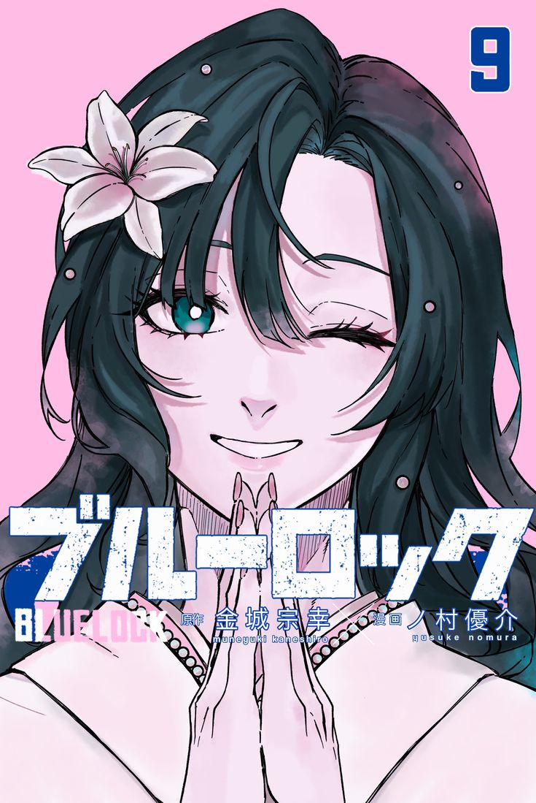

Blue Lock Wiki > Characters > Associates
| Itoshi Mei | |
|---|---|
|
 "A Family Member of a Prominent Player in Blue Lock XI" |
|
| Kanji | 糸師 茗 |
| Romaji | Itoshi Mei |
| Gender | Female |
| Birthday | September 9 |
| Height | 160cm |
| Foot Size | 23cm |
| Blood Type | A |
| Birthplace | Kanagawa, Japan |
| School | Colegio Internazionale Aravèra (I-A) |
| Soccer Exp. | Never played before |
| Favorite Player | Lionel Andrés Messi |
Mei Itoshi (糸師 茗, Itoshi Mei) is a prominent figure connected to the high-stakes world of the Blue Lock program. Officially recognized as a family member of an elite player within the Blue Lock XI circuit, she draws immediate attention despite having absolutely no personal history or background playing active soccer. Attending the prestigious Colegio Internazionale Aravèra, she possesses a uniquely sharp, complex personality that sets her apart from standard expectations.
Mei is a striking young woman standing at 160 cm. She features long, flowing dark teal or deep forest-green hair that dramatically frames her face and sweeps down her shoulders. Her expressive eyes are a brilliant, vivid shade of light turquoise or sea-green, matching the sharp, high-tier visual profiles found throughout the prominent bloodlines of the project. Her style effortlessly switches from elegant, delicate ensembles decorated with ribbons and pearls to high-impact magazine covers.
Mei operates with an incredibly direct, cynical demeanor, openly acknowledged by her own profile as a "nasty attitude". She is highly particular and experiences deep frustration or irritation when external events or people fail to go exactly her way. She holds a dark, completely unapologetic perspective on the world—dismissing seasonal trends with the blunt claim that "every season is sh*t" and stating she would comfortably choose to "end it all, right now" if she knew it was the last day of Earth. Beneath her abrasive, independent shell, Mei is a highly intellectual individual who prefers isolation, resting, and dark analytical content over typical social interactions. She possesses a mischievous sense of humor, openly admitting that watching other people get directly into trouble is one of the very few occurrences that makes her genuinely happy.
While she lacks on-pitch athletic soccer capabilities, Mei handles complex processing and environments with specific operational traits: